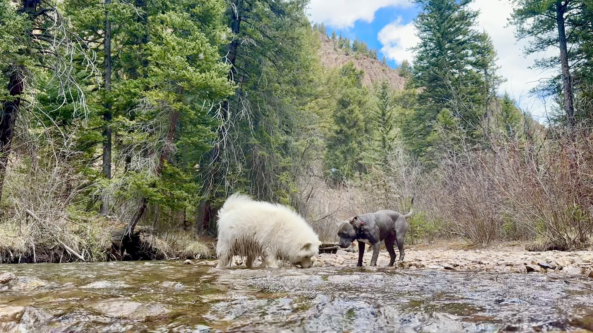

01
Split — photo right, intro left
~60vh · lands on real content; no giant headline
Cement Creek Veterinary Hospital
This must be the place.
A small-animal vet practice for the people and pets of the Gunnison Valley. Independently and women-owned, now welcoming new patients in Crested Butte South.

02
Compact full-bleed
~60vh · same dramatic photo, smaller headline tucked bottom-left
This must be the place.
03
Letterbox + immediate intro
40vh cinematic photo + 35vh intro band · atmosphere + personality in one viewport
Crested Butte South · Independently & women-owned
This must be the place.
A small-animal vet practice for the people and pets of the Gunnison Valley — built from scratch by Dr. Kara Erickson and Shawna Castillo, with 35 combined years of taking notes on what really good care should feel like.
04
Editorial cover
~70vh · magazine-style, deliberate, founders byline included
Cement Creek · Vol. 01
This must
be the place.
A small-animal veterinary practice for the people and pets of the Gunnison Valley. Independently and women-owned. Welcoming new patients in Crested Butte South.
END
That's all four. Tell me which one to drop into index.html.